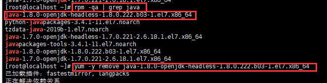

Linux安装JDK和Tomcat
JDK 安装
1.查看系统是否自带 jdk
1 | [root@bogon ~]# rpm -qa|grep jdk |
2.卸载系统自带的 jdk
rpm -e –nodeps jdk版本信息
1 | [root@bogon ~]# rpm -e --nodeps java-1.8.0-openjdk-headless-1.8.0.222.b03-1.el7.x86_64 |
PS 这个方法也行

再次查看
1 | [root@bogon ~]# java -version |
3.在 /usr/java 下 解压 jdk
1 | tar -zxvf jdk-8u271-linux-x64.tar.gz |
压缩的命名是
4.配置环境变量
1 | [root@bogon java]# vim /etc/profile |
在文件后加
1 | # java 环境配置 |
5.让配置文件生效
1 | [root@bogon java]# source /etc/profile |
6.检查是否配置成功
1 | [root@bogon java]# java -version |
Tomcat安装
1.在 /usr 下创建 tomcat 目录，并将tomcat复制到这
1 | [root@bogon usr]# cp /root/下载/apache-tomcat-9.0.39.tar.gz /usr/tomcat/ |
2.解压文件
1 | [root@bogon tomcat]# tar -zxvf apache-tomcat-9.0.39.tar.gz |
3.将项目发布到tomcat中
4.查看防火墙端口是否开启
1 | [root@bogon bin]# firewall-cmd --list-ports |
5.开启 8080 端口
1 | [root@bogon bin]# firewall-cmd --zone=public --add-port=8080/tcp --permanent |
6.重启防火墙
1 | [root@bogon bin]# firewall-cmd --zone=public --add-port=8080/tcp --permanent |
7.访问tomcat
1 | http://192.168.136.128:8080/run/run.html |
配置快捷操作和开机启动
⾸先进⼊ /etc/rc.d/init.d ⽬录，创建⼀个名为 tomcat 的⽂件，并赋予执⾏权限
1 | [root@localhost ~]# cd /etc/rc.d/init.d/ |
接下来编辑 tomcat ⽂件，并在其中加⼊如下内容：
1 |
|
这样后续对于Tomcat的开启和关闭只需要执⾏如下命令即可：
1 | service tomcat start |
如果出现：
1 | service tomcat stop |
在 Tomcat 中 bin 目录中 的 catalina.sh 中加入以下代码

加入开启启动
1 | chkconfig --add tomcat |
本博客所有文章除特别声明外，均采用 CC BY-NC-SA 4.0 许可协议。转载请注明来自 王楗！